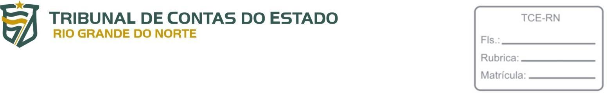

RESOLUÇÃO Nº 021/2021-TCE/RN, 08 DE SETEMBRO DE 2021
Institui a Política de Segurança da Informação no âmbito do Tribunal de Contas do Estado do Rio Grande do Norte - TCE/RN e dá outras providências.
O TRIBUNAL DE CONTAS DO ESTADO DO RIO GRANDE DO NORTE, no uso das atribuições que lhe confere o disposto no inciso XIX do art. 7º da Lei complementar Estadual nº 464, de 05 de janeiro de 2012, e o inciso IX do art. 12 do seu RegimentoInterno, aprovado pela Resolução nº 009, de 19 de abril de 2012, e
CONSIDERANDO o grau de indispensabilidade alcançado pela tecnologia da informação para a realização das funções institucionais e alcance dos objetivos estratégicos do Tribunal de Contas do Estado do Rio Grande do Norte (TCE/RN);
CONSIDERANDO a velocidade de processamento de dados e capacidade de armazenamento de informações que a tecnologia da informação proporciona;
CONSIDERANDO o grande volume de recursos humanos, financeiros e patrimoniais vinculados à operacionalização e manutenção de bens e serviços de tecnologia da informação;
CONSIDERANDO a necessidade de adequar as práticas para controle de segurança da informação do TCE/RN às diretrizes fixadas pela ISO/IEC 29002:2013, da Associação Brasileira de Normas Técnicas (ABNT);
CONSIDERANDO a importância de se incentivar uma abordagem coerente na descrição de atividades relativas à gestão de riscos, mediante emprego de terminologia uniforme em processos e estruturas organizacionais, conforme estabelece a ISO Guide73:2009, da ABNT;
CONSIDERANDO os requisitos para estabelecer, implementar, manter e melhorar continuamente um sistema de gestão de segurança da informação dentro do contexto da organização, bem como as normas para avaliação e tratamento de riscos, dispostos na ISO/IEC 27001:2013, da ABNT;
CONSIDERANDO as diretrizes para práticas de gestão de segurança da informação e normas de segurança da informação para as organizações, incluindo a seleção, a implementação e o gerenciamento de controles, levando em consideração os ambientes de risco da segurança da informação da organização, estabelecidas pela ISO/IEC 27002:2013 e pela ISO/IEC 27005:2018 (ABNT);
CONSIDERANDO que a Lei nº 12.527, de 18 de novembro de 2011, mais conhecida como Lei de Acesso à Informação, fixa como diretriz para a administração pública a observância da publicidade como preceito geral e do sigilo como exceção;
CONSIDERANDO que a Lei de Acesso à Informação (LAI) consigna que a administração pública deve pautar-se na utilização de meios de comunicação viabilizados pela tecnologia da informação;
CONSIDERANDO que a Lei nº 13.709/2018, também chamada de Lei Geral de Proteção de Dados Pessoais (LGPD), dispõe sobre o tratamento de dados pessoais, inclusive nos meios digitais, por pessoa natural ou por pessoa jurídica de direito público ou privado, com o objetivo de proteger os direitos fundamentais de liberdade e privacidade e o livre desenvolvimento da personalidade da pessoa natural;
CONSIDERANDO que a LGPD contém normas gerais sobre o tratamento de dados pessoais que são de interesse nacional e devem ser observadas pela União, Estados, Distrito Federal e Municípios;
CONSIDERANDO que o Tribunal de Contas do Estado do Rio Grande do Norte deve construir uma cultura organizacional pautada na harmonização entre os preceitos da Lei de Acesso à Informação (LAI) e as normas sobre tratamento de dados pessoais constituídas pela Lei Geral de Proteção de Dados;
CONSIDERANDO que se faz necessária a padronização do uso de recursos de Tecnologia da Informação, bem como para o armazenamento de dados em meio digital, para que os processos de trabalho possuam o respaldo de medidas de segurança compatíveis com o grau de relevância de que elas se revestem, em consonância com os princípios da LAI e da LGPD;
CONSIDERANDO que asegurança da informação e comunicação, digital ou física, é um tema de permanente acompanhamento e aperfeiçoamento, devendo ser constantemente revista e atualizada, visando à melhoria contínua da qualidade dos processos internos;
RESOLVE:
CAPÍTULO I
SEÇÃO I - Disposições Gerais
Art. 1º Fica instituída a Política de Segurança da Informação do Tribunal de Contas do Estado do Rio Grande do Norte (PSI), que observará os princípios, os objetivos e as diretrizes estabelecidos nesta resolução, bem como as disposições constitucionais, legais e regimentais vigentes.
§1º Membros, servidores, terceirizados, estagiários e quaisquer pessoas que tenham acesso aos ativos de informação pertencentes ao Tribunal de Contas do Estado do Rio Grande do Norte – TCE/RN se sujeitam aos termos estabelecidos nesta resolução e são responsáveis por garantir a segurança dos ativos físicos e lógicos a que tenham acesso em razão do exercício do serviço.
§ 2º A Diretoria de Informática - DIN deverá atualizar-se em relação às boas práticas de segurança da informação e possíveis vulnerabilidades que possam comprometer a segurança de seus dados, podendo a tarefa ser delegada a funcionários específicos da DIN, a critério do dirigente da unidade.
Art. 2° Diante de casos não tratados de forma expressa nesta resolução, caberá aos funcionários do TCE/RN buscar a preservação da segurança das informações que estejam sob suas responsabilidades, em consonância com os princípios e normas aplicáveis.
Art. 3° É dever de todos que possuem acesso aos ativos pertencentes ao TCE/RN zelar pela segurança da informação.
SEÇÃO II - Princípios
Art. 4º A atividade de segurança institucional será desenvolvida no âmbito do TCE/RN com observância, entre outros, dos seguintes princípios:
I – proteção aos direitos humanos e respeito aos princípios constitucionais da atividade administrativa;
II - orientação de suas práticas pela ética profissional, cultuando-se os valores fundamentais do Estado Democrático de Direito;
III – atuação preventiva e proativa, de modo a possibilitar antecipação às ameaças e ações hostis e sua neutralização;
IV - integração do TCE/RN com outros órgãos essenciais à atividade de segurança institucional e com a Autoridade Nacional de Proteção de Dados (ANPD);
V – orientação da atividade às ameaças reais ou potenciais à Instituição e a seus integrantes, inclusive no que tange aos efeitos de acidentes naturais;
VI – salvaguarda da imagem da instituição, evitando-se sua exposição e exploração midiática negativa;
VII - incentivar a participação colaborativa e coordenada com o objetivo de constituir uma sensação de segurança ativa;
VIII - gestão de riscos voltada para a salvaguarda de ativos do TCE/RN;
IX - proteção da vida, do patrimônio e do meio ambiente.
SEÇÃO III - Conceitos
Art. 5° Para efeitos desta Resolução são considerados os seguintes conceitos:
I - ativo de informação: recurso utilizado na produção, processamento, armazenamento, transmissão e recuperação da informação, incluindo a própria informação, sistemas de informação, equipamentos de rede, telecomunicações, computadores, dispositivos móveis, dispositivos de armazenamento, programas, banco de dados, locais onde se encontram esses meios e as pessoas que a eles têm acesso;
II - ciclo de vida da informação: conjunto de eventos relacionados à criação ou obtenção, à classificação, à distribuição, ao uso, ao armazenamento, ao descarte ou à guarda permanente da informação;
III - informação: conjunto de dados armazenados em meio eletrônico, nos equipamentos, de propriedade e uso do TCE, devendo a informação ser classificada, segundo o grau de sigilo por ela exigido;
IV - classificação da informação: ação que define o grau de sigilo e os grupos de acesso atribuídos à informação, visando a garantir um nível adequado de proteção;
V - autenticidade: assegura a correspondência entre o autor de determinada informação e a pessoa, processo ou sistema a quem se atribui a autoria;
VI - confidencialidade: garantia de que a informação seja acessada somente pelos usuários ou processos autorizados;
VII - disponibilidade: garantia de que usuários possam ter pronto acesso às informações segundo sua demanda e em conformidade com a política de segurança;
VIII - integridade: garantia de que a informação não foi modificada ou destruída de maneira não autorizada ou acidental, inclusive quanto à origem, trânsito e destino;
IX - não repúdio: garantia de que o emissor da mensagem não irá negar posteriormente a autoria da mensagem ou transação, permitindo a sua identificação;
X - softwares básicos: conjunto de programas que auxiliam os usuários a utilizarem os equipamentos para desempenhar suas tarefas;
XI - incidente em segurança da informação: indício de fraude, sabotagem, desvio, falha ou evento indesejado ou inesperado que tenha potencial para comprometer as operações do negócio e ameaçar a segurança da informação;
XII - informação sigilosa: aquela abrangida pelas hipóteses legais de restrição de acesso ou a classificada como sigilosa, submetida temporariamente à restrição de acesso público, em razão de sua imprescindibilidade para a segurança da sociedade e do Estado;
XIII - gestão de riscos de segurança da informação: conjunto de processos que permite identificar e implementar as medidas de proteção necessárias paraminimizar os riscos a que estão sujeitos os seus ativos de informação, e equilibrá-los com os custos operacionais e financeiros envolvidos;
XIV - usuário interno: autoridade, servidor, colaborador terceirizado ou qualquer pessoa que tenha acesso às informações produzidas ou recebidas pelo TCE/RN;
XV - usuário externo: pessoa física ou pessoa jurídica que tenha acesso às informações produzidas ou recebidas pelo TCE/RN e que não seja caracterizada como usuário interno;
XVI - gestor da informação: agente público, titular da direção de setor específico do TCE, que tem como responsabilidade gerar informação para o sistema;
XVII - conta: registro que identifica cada usuário, através do nome e senha personalizados, garantindo-lhe direito de acesso a determinados recursos computacionais do TCE/RN.
XVIII – DIN: Diretoria de Informática do TCE/RN.
SEÇÃO IV - Objetivos
Art. 6º A política de segurança da informação do TCE/RN tem como objetivos:
I - garantir a autoria do responsável pelo envio da informação;
II - garantir que os ativos de informação, bem como os ativos de processamento e armazenamento de dados sejam protegidos contra acesso não autorizado;
III - garantir que os dados pertencentes ao órgão estejam, sempre que possível e necessário, disponíveis ao solicitante;
IV - garantir a consistência e segurança das informações armazenadas ou transmitidas pelo órgão;
V – promover a conscientização e o comprometimento dos membros, servidores, terceirizados e estagiários do TCE/RN, para a preservação da confidencialidade, da integridade e da disponibilidade das informações, a segurança nas operações e qualidade das atividades desempenhadas;
VI – divulgar informações de interesse público, independentemente de solicitações;
VII – contribuir para a otimização do uso dos meios de comunicação viabilizados pela tecnologia da informação;
VIII – fomentar o desenvolvimento da cultura da transparência na administração pública;
IX – contribuir para o desenvolvimento do controle social da administração pública.
Parágrafo único. Os objetivos da política de segurança da informação deverão estar alinhados ao plano estratégico do órgão e ao plano diretor de tecnologia da informação do TCE/RN.
CAPÍTULO II
DA INFORMAÇÃO
SEÇÃO I - Da Classificação da Informação
Art. 7° A classificação da informação tem por objetivo assegurar que a informação receba um nível adequado de proteção.
Parágrafo único. A informação será classificada para indicar a necessidade, as prioridades e o nível esperado de proteção quanto ao tratamento da informação durante todo o seu ciclo de vida.
Art. 8º A classificação da informação quanto ao grau de sigilo se dará na forma do artigo 3° da Resolução n° 015/2012-TCE, que dispõe sobre o acesso à informação e a aplicação da Lei de Acesso à Informação no âmbito do TCE/RN.
Parágrafo único. Poderá ser considerada sigilosa qualquer informação que:
I - provoque riscos à vida, à honra, a segurança ou saúde da população;
II - provoque riscos à defesa, economia ou relações internacionais do Estado;
III - provoque assimetria competitiva ou privilégio entre pessoas jurídicas;
IV - exponha o TCE/RN a ataques ou fraudes;
V - seja relativa a autorizações, estudos e fiscalizações que componham processo não concluído;
VI – notícia de fato apresentada por meio de denúncia ou representação, ainda não conhecida pelo Conselheiro Relator, nos termos dos parágrafos § 1° e 2° do art. 80 da Lei Orgânica do TCE/RN.
Art. 9º A Unidade de Informações Estratégicas do Tribunal de Contas do Estado do Rio Grande do Norte, denominada Coordenadoria de Informações Estratégicas para o Controle Externo - CIEX, tem competência para classificar suas informações de acordo com o grau de sigilo da produção de conhecimento.
Art. 10 Para os fins desta Resolução, considera-se informação pessoal o dado relacionado à pessoa identificada ou identificável, à vida privada, à honra ou à imagem.
Parágrafo único. As disposições deste artigo aplicam-se, no que couber, às pessoas jurídicas.
SEÇÃO II - Das Obrigações do Gestor da Informação
Art. 11 São responsabilidades dos gestores da informação, no que concerne às informações sob sua gestão, produzidas ou custodiadas pelo TCE/RN:
I - manter atualizada a relação dos usuários que tenham acesso às informações sob sua responsabilidade;
II - coordenar as atividades de identificação, classificação e enquadramento das informações;
III - garantir o cumprimento das normas e procedimentos relativos à segurança das informações;
IV - definir procedimentos e grupos de acesso, observados os dispositivos legais e regimentais relativos ao sigilo e aoutros requisitos de segurança pertinentes;
V - conscientizar usuários internos em relação aos conceitos e às práticas de segurança da informação;
VI - tomar as medidas administrativas necessárias para que sejam aplicadas ações corretivas nos casos de comprometimento da segurança da informação por parte dos usuários internos;
VII - rotular a informação sigilosa em matéria de sua competência ou inerente à sua área de atuação, enquadrada em hipótese legal de sigilo ou de segredo de justiça.
SEÇÃO III - Do Ciclo de Vida da Informação
Art. 12 O ciclo de vida da informação é composto pelas etapas de manuseio, armazenamento, transporte e descarte, assim caracterizadas:
I - manuseio: momento em que a informação é criada e manipulada, seja sob a forma física ou eletrônica;
II - armazenamento: fase em que há o armazenamento propriamente dito da informação, seja em papel, arquivo físico, banco de dados ou qualquer outro tipo de mídia;
III - transporte: etapa em que a informação é transportada, seja em papel, mídia ou por meio remoto em uma rede de computadores;
IV - descarte: momento em que a informação é descartada, em formato físico ou eletrônico.
Art. 13 Caberá a cada gestor de informação tomar as devidas providências em relação ao ciclo de vida da informação que se encontre em seu setor.
SEÇÃO IV - Do Tratamento dos Ativos de Informação
Art. 14 As unidades que compõem o TCE/RN e o Ministério Público de Contas deverão atribuir a um ou mais servidores a responsabilidade de classificar e documentar seus ativos de acordo com seu valor, sensibilidade, criticidade e requisitos legais.
§ 1º A atribuição dos responsáveis pela classificação e documentação do ativo deve ser feita de forma hábil e, sempre que possível, após criação ou transferência do respectivo ativo à unidade ou órgão.
§ 2º O tempo máximo para a atribuição dos responsáveis pela classificação e documentação do ativo será tratado em norma específica.
Art. 15 Após a devida classificação, os ativos deverão ser atribuídos a proprietários, que ficarão responsáveis pelo seu ciclo de vida e sua segurança, mantendo a respectiva documentação atualizada, e revisando-a sempre que houver mudanças que justifiquem a sua atualização, nos termos definidos em norma complementar.
Parágrafo único. O proprietário atribuído ao ativo não tem direitos de propriedade sobre o ativo.
Art. 16 As instruções para a classificação, documentação, rotulamento e tratamento dos ativos de forma adequada serão objeto de norma específica.
Art. 17 Fica sob a responsabilidade da sua respectiva direção, do proprietário ou de quem esteja com a responsabilidade sobre o ativo, autorizar ou rejeitar a sua retirada do estabelecimento.
§ 1º A autorização da retirada do ativo será feita para permitir a continuidade das atividades do órgão.
§ 2º Apenas servidores do tribunal poderão retirar, com a devida autorização, os ativos do estabelecimento.
§ 3º O servidor realizará a devolução do ativo ao órgão quando cessarem os motivos para a retirada ou no caso de encerramento de seu vínculo com o TCE/RN.
Art. 18 Os ativos de informação e os recursos de armazenamento e processamento de dados deverão ser utilizados de forma aceitável, nos termos definidos em norma complementar.
Art. 19 A norma definirá as regras para a utilização de recursos computacionais pessoais dos funcionários dentro das instalações do tribunal ou em regime de teletrabalho, no exercício das funções.
SEÇÃO V - Do Gerenciamento de Eventos
Art. 20 Procedimentos para identificar e tratar os eventos decorrentes dos equipamentos de armazenamento e processamento de dados devem ser implementados e documentados, visando evitar que surjam incidentes que possam comprometer a disponibilidade ou o desempenho dos serviços de TI do TCE.
Parágrafo único. A classificação dos eventos de acordo com a sua criticidade, bem como os procedimentos necessários para tratá-los de forma apropriada serão definidos em norma específica.
SEÇÃO VI - Do Gerenciamento de Incidentes de Rede
Art. 21 A DIN manterá um núcleo de gerenciamento de incidentes que deverá garantir a restauração dos serviços de TI de forma hábil, nos prazos e termos definidos em norma, minimizando eventuais efeitos negativos nos processos do órgão.
SEÇÃO VII - Do Gerenciamento de Problemas
Art. 22 A DIN manterá um núcleo de gerenciamento de problemas, que visa minimizar a interrupção nos serviços de TI, buscando reduzir a quantidade de incidentes e evitar sua recorrência.
§ 1º O núcleo de gerenciamento de problemas analisará as causas dos incidentes recorrentes ou de grande impacto para os serviços de TI.
§ 2º Será mantido um banco de dados de erros conhecidos que conterá todas as soluções produzidas pelo núcleo de gerenciamento de problemas.
§ 3º Os procedimentos necessários para analisar e tratar os problemas serão dispostos em norma específica.
SEÇÃO VIII - Da Gestão de Riscos
Art. 23 O TCE/RN deverá elaborar um plano de gerenciamento de riscos que objetive mensurar ameaças, riscos e seus potenciais danos à organização, de modo a fornecer subsídios para melhoria da segurança institucional.
Parágrafo único. Critérios para determinar quais riscos são aceitáveis e quais necessitam de controles especiais serão estabelecidos de acordo com os possíveis impactos ao tribunal.
SEÇÃO IX - Da Gestão de Continuidade
Art. 24 Serão adotados procedimentos emergenciais e formais, através da definição de um Sistema de Gestão de Continuidade de Negócios (SGCN), para a eventualidade de ocorrência de algum incidente de segurança da informação que possa causar interrupção na continuidade de processos organizacionais decorrentes de desastres ou falhas em recursos de tecnologia da informação e comunicação neste tribunal de contas.
Art. 25 O Sistema de Gestão de Continuidade de Negócios se responsabiliza pela realização das cópias de segurança dos ativos de informação para proteção contra desastres, que devem ser hospedadas em locais próprios, acessíveis e distintos das instalações do tribunal.
SEÇÃO X - Da Auditoria e Conformidade
Art. 26 Todos os ativos de informação deste tribunal poderão ser objetos de auditoria por equipe designada pela direção de TI, de acordo com os termos definidos em norma específica.
SEÇÃO XI - Dos Controles de Acessos
Art. 27 A política de controle de acessos terá como objetivo limitar os acessos às informações e aos recursos de processamento e armazenamento de informação e, através dos termos dispostos nesta política e em norma específica, tratará dos seguintes aspectos:
I - controles de acesso físico e lógico às informações sigilosas;
II - definição dos papéis que possuem acesso privilegiado;
III - requisitos para autorização formal de acesso às informações fiscais;
IV - procedimentos para remoção e atribuição de privilégios de usuários;
V - controles sobre o gerenciamento das senhas de acesso, incluindo, dentre outros aspectos, o tempo de validade, os parâmetros mínimos de qualidade, as condições para os provimentos de senhas temporárias e as condições de bloqueio;
VI - requisitos para acesso às redes e aos serviços de rede;
VII - definição de termos sobre o controle de entrada física nas instalações, escritórios e salas do TCE de acordo com seus níveis de criticidade.
Art. 28 O acesso aos ativos de informação, físico e de software, assim como o acesso às áreas físicas protegidas devem ser permitidos apenas a pessoas devidamente autorizadas, de acordo com os termos definidos em norma.
Art. 29 Os servidores do Tribunal de Contas que tiverem acesso a dados sigilosos constantes das declarações de bens e rendimentos recebidas deverão assinar termo de confidencialidade relativo a esses dados.
Art. 30 Os servidores ou quaisquer pessoas que, em virtude do exercício de cargo, função ou emprego público, tenham acesso às informações fiscais relativas às autoridades e aos servidores públicos, sujeitam-se às penalidades prescritas nesta resolução por infração às disposições pertinentes ao dever de sigilo sobre as informações de natureza fiscal e patrimonial de terceiros.
Art. 31 Os dados conveniados entre o Núcleo de Informações Estratégicas para o Controle Externo com qualquer outro órgão estarão sujeitos aos termos do acordo de cooperação assinado para fins de controle de acesso desses dados.
Art. 32 Todos os servidores devem ser orientados a manter a confidencialidade das informações de autenticação que a e pertencem.
§ 1º A senha de autenticação deve possuir um padrão mínimo de qualidade de acordo com as regras dispostas em norma específica, devendo ser alterada toda vez que a sua confidencialidade for comprometida.
§ 2º Os usuários ficam responsáveis pelos danos causados pela divulgação não autorizada das informações de autenticação que a ele pertencem.
§ 3º As informações de autenticação não devem ser anotadas, a menos que seja feito por procedimento seguro e aprovado.
Art. 33 O acesso relacionado aos sistemas corporativos será provido via perfis de trabalho ou autorizado quando possível pelo seu responsável.
Art. 34 O cadastro de usuário interno para utilização dos recursos de TI será realizado pela DIN mediante requisição do chefe da unidade organizacional.
Art. 35 Após o fim do vínculo do usuário interno com o TCE/RN, suas contas de usuário serão cessadas e todos os seus direitos de acesso serão igualados aos usuários externos do tribunal.
Art. 36 Serão definidos perímetros de segurança física a partir dos quais devem haver níveis de proteção específicos contra acesso indevido, de acordo com a criticidade dos recursos que a eles pertencem.
Parágrafo único. Procedimentos para proteção contra acesso físico não autorizado serão estabelecidos de acordo com os perímetros de segurança física definidos.
Art. 37 Os locais de entrega e carregamento de materiais físicos devem ser controlados e separados das demais áreas restritas do tribunal.
SEÇÃO XII - Do Tratamento dos Dados Pessoais
Art. 38 O TCE/RN deverá de forma clara e objetiva especificar a finalidade e o método utilizado no tratamento dos dados pessoais para seu titular.
Art. 39 Somente os dados pessoais estritamente necessários ao atendimento da finalidade pública e ao desempenho das funções típicas do Tribunal de Contas serão tratados.
§ 1º Nas hipóteses nas quais o Tribunal de Contas estiver desempenhando funções atípicas, distintas daquelas previstas no artigo 71 da Constituição Federal, os dados pessoais de pessoas naturais deverão ser tratados de acordo com as bases legais indicadas na Lei Federal n. 13709/2018.
§ 2º O consentimento do titular só será necessário quando desempenhadas funções atípicas e nas específicas situações em que a Lei Geral de Proteção de Dados Pessoais exigir.
Art. 40 O TCE deverá garantir a integridade dos dados pessoais, disponibilizando o direito ao titular de conferir a exatidão, clareza e atualização desses dados de acordo com a necessidade e cumprimento da finalidade do tratamento.
Art. 41 O TCE deverá garantir a proteção dos dados pessoais em quaisquer meios, e não apenas os digitais.
Art. 42 É vedado o uso de dados pessoais com a intenção de discriminar ou promover qualquer tipo de abuso contra os respectivos titulares ou contra qualquer outra pessoa.
Art. 43 Todos os sistemas do TCE que coletam informações pessoais deverão ter seu termo de uso e política de privacidade destacando sua finalidade e consentimento dos titulares dos dados.
Art. 44 Em caso de compartilhamento de dados com outros órgãos e entes públicos, o Tribunal de Contas deverá estar atento às determinações contidas em específica legislação de regência sobre proteção de dados pessoais.
Art. 45 Os servidores e sistemas do TCE devem possuir criptografia, controle de sessão e logs, de modo a prevenir e realizar auditorias em caso de vazamento de dados pessoais para terceiros.
Art. 46 Em caso de vazamento de dados pessoais armazenados pelo TCE,é obrigatório que o titular dos dados seja avisado sobre o incidente.
SEÇÃO XIII - Do Correio Eletrônico Institucional
Art. 47 O uso do serviço de correio eletrônico, através do endereço institucional do TCE/RN, deve ser exclusivo para realização de trabalhos operacionais do tribunal.
Art. 48 Todos os membros e servidores internos do tribunal poderão solicitar a DIN um endereço de correio eletrônico institucional para fins de comunicação e trabalho.
Art. 49 Todas as comunicações por meio de correio eletrônico que sejam feitas em nome do TCE/RN deverão, sempre que possível, utilizar endereços institucionais.
Art. 50 As mensagens transmitidas entre os servidores deverão, prioritariamente, ter como destinatário endereços institucionais.
Art. 51 Regras para a utilização segura do serviço de correio eletrônico, limitação de espaço de armazenamento, cópias de segurança, responsabilidades, direitos e penalidades referentes ao uso dessas contas serão especificadas através de norma complementar.
SEÇÃO XIV - Do Acesso à Internet
Art. 52 Todos os funcionários do TCE/RN terão acesso à Internet, ficando restritos aos endereços permitidos pelas regras dispostas em norma complementar.
Art. 53 Cabe à DIN implantar os controles de acesso e mecanismos de auditoria que garantam o monitoramento do acesso à internet pela rede corporativa do TCE/RN.
Art. 54 Os usuários são responsáveis pelos conteúdos dos endereços acessados por eles.
SEÇÃO XV - Da Publicação de Informação
Art. 55 A Assessoria de Comunicação Social, a Escola de Contas do TCE/RN e a Secretaria das Sessões possuem competência para fazer publicações sobre notícias e transmissão ao vivo de eventos.
Parágrafo único. O Presidente do TCE/RN poderá conceder autorização a outras unidades administrativas para que realizem publicação de notícias e transmissão ao vivo de eventos.
Art. 56 A utilização de perfis institucionais mantidos em redes sociais com o objetivo de divulgar ou compartilhar informações do TCE/RN deverá estar em consonância tanto com a Política de Segurança da Informação quanto com os objetivos estratégicos da instituição.
SEÇÃO XVI - Da Segurança em Recursos Humanos
Art. 57 As obrigações contratuais estabelecidas aos novos servidores, estagiários e terceirizados, ou aos que decorrerem de renovação de contrato, devem estar em consonância com esta política de segurança da informação.
Art. 58 Os membros, servidores, estagiários e terceirizados do TCE/RN observarão, no exercício das suas funções, os padrões éticos de conduta que lhes são inerentes, norteando-se pelos princípios da transparência, prudência, integridade profissional e pessoal, dignidade, probidade, lisura no que concerne à relação entre suas atividades públicas e particulares garantindo assim a preservação da segurança da informação e caráter profissional inerente ao exercício da função pública.
§ 1º Os membros, servidores, estagiários e terceirizados do TCE/RN conduzirão suas atividades de maneira a prevenir a violação das informações e a continuidade dos serviços.
§ 2º Em caso de desligamento do servidor, terceirizado ou estagiário, por iniciativa própria ou não, os direitos de acesso serão removidos e as senhas compartilhadas deverão ser alteradas.
§ 3° Em caso de demissão, as ações de segurança deverão ser feitas em paralelo ao ato de formalização do desligamento.
CAPÍTULO III
ATUALIZAÇÕES
Art. 59 O TCE/RN instituirá Comissão de Segurança da Informação (CSI) de caráter permanente, que tem por finalidade formular e conduzir diretrizes impostas por esta política, analisar periodicamente sua efetividade, propor normas e mecanismos institucionais para melhoria contínua, bem como assessorar a unidade organizacional responsável pela segurança da informação. (Revogado pela Resolução n.º 023/2026-TCE)
§ 1º É de competência da CSI a revisão, no máximo a cada 5 (cinco) anos ou sempre que se fizer necessário, em função de alterações na legislação pertinente de modo a atender aos novos requisitos corporativos. (Revogado pela Resolução n.º 023/2026-TCE)
§ 2° Fica sob a responsabilidade da CSI a criação de termos específicos, em norma complementar, que definirão a forma adequada da realização de cópias de segurança dos ativos de informação pertencentes ao órgão. (Revogado pela Resolução n.º 023/2026-TCE)
§ 3º A composição e os regulamentos da CSI serão estabelecidos por ato da Presidência. (Revogado pela Resolução n.º 023/2026-TCE)
CAPÍTULO IV
PENALIDADES
Art. 60 Ações que violem esta Política ou quaisquer de suas diretrizes, normas ou procedimentos, ou que infrinjam os controles de segurança da informação e comunicações deverão ser comunicados à Corregedoria do TCE/RN, nos termos do § 1° do art. 15 da Lei Orgânica do TCE/RN, para que sejam devidamente apuradas;
Parágrafo único. Caberá à Corregedoria do TCE/RN aplicar aos responsáveis as penalidades dispostas no art. 138, incisos I a VI, da Lei Complementar Estadual nº 122, de 30 de junho de 1994, que dispõe sobre o regime jurídico único dos servidores públicos civis do Estado e das autarquias e fundações públicas estaduais, e institui o respectivo Estatuto e dá outras providências.
CAPÍTULO V
DISPOSIÇÕES FINAIS
Art. 61 A presente Política de Segurança da Informação não exclui a necessidade de que o TCE/RN institua Política de Proteção de Dados Pessoais, em conformidade com a Lei de Acesso à Informação e com a Lei Geral de Proteção de Dados.
Parágrafo único. Na Política de Proteção de Dados Pessoais, o TCE/RN designará agente encarregado dos dados, com a função de atuar como canal de comunicação entre a instituição, o titular dos dados e a ANPD.
Art. 62 Casos omissos serão decididos pelo Presidente do Tribunal de Contas.
Art. 63 Esta resolução entra em vigor na data de sua publicação.
Sala das Sessões do Pleno, em Natal (RN), 08 de setembro de 2021.
Conselheiro PAULO ROBERTO CHAVES ALVES
Presidente
Conselheiro RENATO COSTA DIAS
Vice-Presidente
Conselheiro TARCÍSIO COSTA
Conselheira MARIA ADÉLIA DE ARRUDA SALES SOUSA
Conselheiro CARLOS THOMPSON COSTA FERNANDES
Conselheiro FRANCISCO POTIGUAR CAVALCANTI JUNIOR
Conselheiro ANTÔNIO GILBERTO DE OLIVEIRA JALES
Fui presente:
Bacharel THIAGO MARTINS GUTERRES
Procurador-Geral do Ministério Público junto ao Tribunal de Contas do Estado